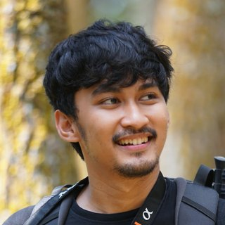

I'm Yafi, an offensive security consultant at ITSEC Asia. I find security flaws in web apps, APIs and internal networks for banks, telcos, insurers and universities.
I'm now going deeper into software engineering, security engineering and AI, and I write and make videos about what I learn.
Writing & research
All writing →Research
-
Development of Bash Scripting-Based Forensic Tools for Investigating XSS and DDoS Attack Logs on Websites Undergraduate thesis, Universitas Gadjah Mada.
-
Analysis of Encrypted Network Traffic from a Secure Instant Messaging Application: A Case Study on Synology Chat Jurnal Cybersecurity dan Forensik Digital, Vol. 5 No. 2.
Projects
All projects →Videos & talks tech
All videos →Work
Résumé ↗-
2023 – now
ITSEC Asia
Jr. Offensive Security Consultant, previously intern
- Run web, API and infrastructure pentests and retests for banks, telcos, insurers and universities, in white-, grey- and black-box engagements.
- Write English technical reports and walk client stakeholders through risk and remediation.
- Completed the HTB Academy CPTS, CBBH and CWEE job-role paths. Preparing for OSCP and OSWE.
-
2022 – 2023
Synapsis.id
Backend Developer Intern
- Built Go and MySQL services, containerized with Docker, for a coal mining client's production system.
-
2022
Camp404
Fullstack Web Developer Intern
- Sped up a Laravel app's search by querying results on demand instead of loading the full table, and taught HTML, CSS, PHP and SQL to 1,514 learners.
-
2021
Widya Security
Cybersecurity Engineer Intern
- Tested web apps with OWASP and ISSAF, including an application-layer DoS test with slowloris that kept the target down for over 16 minutes.
- Researched live forensic acquisition of encrypted chat traffic; the work became a journal paper.
Education & community
-
2019 – 2023
Universitas Gadjah Mada
B.Eng. Information Engineering · teaching assistant for Computer Security and IT Auditing
-
2020 – 2021
Technocorner
Software Developer Lead · tech event at Universitas Gadjah Mada
Awards
- 20211st place, KMTETI CTF
- 2020Finalist, ELCCO Technology Creation Contest
- 20173rd place, Science and Technology Award · Mayor of Yogyakarta
- 20171st place, Science Expo Padmanaba
Off the clock
I play piano and guitar, run, and lift. I speak Indonesian, Javanese and English.
Get in touch
For research, writing or roles in application security, email works best.